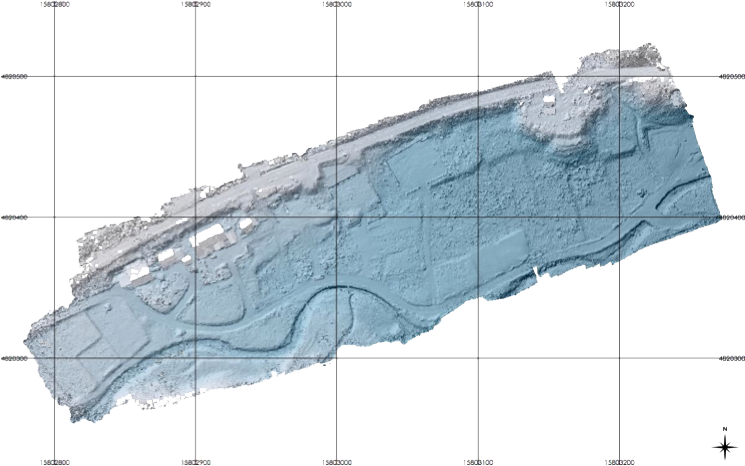

SfM多視点ステレオ写真測量による地形モデリングの基礎
内山庄一郎（防災科学技術研究所）・早川裕弌（東京大学CSIS）

この資料は、2017年地理情報システム学会第26会学術研究発表大会ハンズオンセッション（2017年10月29日開催）の配布資料を基に作成しました。
SfM（Structure from motion）多視点ステレオ写真測量技術による解析により、撮影対象物の立体モデルが作成される。地表面を撮影した写真を用いた場合、地表面の立体モデルが作成される。フィールドで取得した対空標識の位置座標を立体モデルに与えることにより、地理座標を持った地表面三次元モデルとなる。地図成果であるオルソモザイク画像は、この地表面三次元モデルを上から正射投影した画像であり、DSM（Digital surface model; 地表面数値標高モデル）は三次元モデルを一定間隔のメッシュで分割し、メッシュ内の標高に相当する値が格納されたデータである。これらの情報をGeoTiffファイル等の地理空間情報として出力することにより、最終的な地図成果が得られる。
なお、本稿では、一部に古いバージョンの図や説明があります。